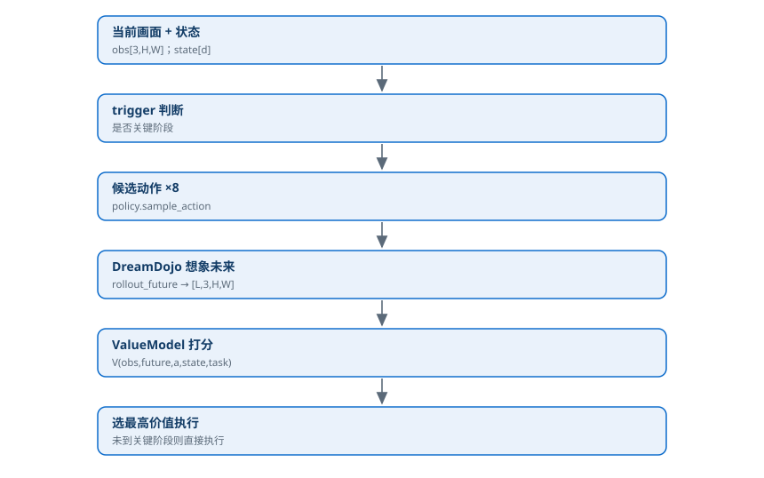

DINOv2 帧编码 + value token · 成功/失败/边界数据训练价值 · 关键阶段才展开候选想象
DreamAvoid 不在每一步想象：由 trigger 判断「是否关键阶段」，只有关键阶段才采样多个候选动作、想象它们的未来、用价值模型挑最安全的执行。
| 项 | 值 |
|---|---|
| 价值模型 | 冻结 DINOv2 + 3 层时序注意力 + 标量头 |
| 数据 | 成功/失败/边界混合训练 |
| 触发 | 关键阶段由 trigger 判定；候选 8 个 |
| 结果 | 成功率提升（论文表格，L3） |
| 层级 | 内容 |
|---|---|
| L1 计算理论 | 只在关键阶段用想象评估候选动作的安全性；约束：全时想象太贵，价值必须由混合数据学出。 |
| L2 表征与算法 | 表征：价值 V(obs, future, a, state, task)；算法：trigger 判定 + 候选采样 + 价值打分。 |
| L3 实现 | 冻结 DINOv2 + 3 层时序注意力；8 候选；触发阈值可调。 |

物理：价值不是「动作本身好不好」，而是「这个动作导致的未来会不会失败」。
物理：价值模型输入当前画面、未来帧、动作、本体、任务，输出标量。
物理：从候选里挑最安全的执行。
物理：平时直接执行，控制算力。
仓库 XianzheFan/DreamAvoid：DreamDojo-da/examples/value_model.py、openpi-da/agilex/agilex_infer_dream_trigger.py（源码级）。
class ValueModel(nn.Module):
def forward(self, obs, future, action, state, task_id):
# 物理：当前帧与未来帧各自编码，value token 汇总
obs_tok = encoder(obs) + frame_emb[0]
fut_tok = encoder(future) + frame_emb[1] + time_emb[:L]
seq = transformer([value_token] + obs_tok + fut_tok)
x = cat([seq[:,0], proj(action), task_emb(task_id), proj(state)])
return head(x).squeeze(-1) # 标量价值
def dream_avoid_step(policy, value_model, obs, state, task):
# 物理：只在关键阶段花算力想象
if not trigger(obs): return policy.act(obs)
cands = [policy.sample_action(obs) for _ in range(8)]
return max(cands, key=lambda a: value_model.score(
obs, rollout_future(policy, obs, a), a, state, task))返回 方法精读 Wiki 索引 ｜ 博客：VLA/WAM 的 RL 后训练实现版